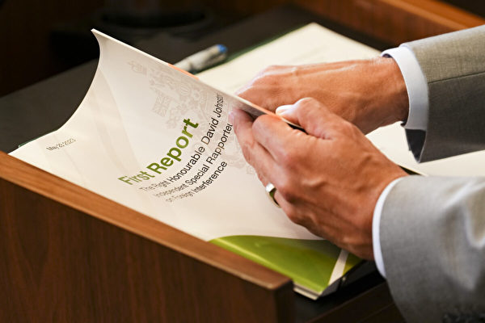

外国干涉委员会将于9月和10月举行公听会，审查加拿大政府抵抗外国干涉的能力。（Sean Kilpatrick/加通社） 【2024年08月07日讯】（记者Noé Chartier报导/周行编译）据媒体报导，逃往澳大利亚的一名前中共秘密警察，将向加拿大外国干涉委员会提供证据。化名为“埃里克”的男子，在中共公安部工作了15年，包括担任卧底特工。他告诉澳大利亚广播公司ABC，他受加拿大外国干涉委员会的邀请，将于今年秋天作证。
ABC表示，埃里克曾参与中共全球追捕异见人士的行动。他假扮房地产高管或异见人士，在印度和加拿大等地，试图将目标人物引诱到特定国家，以便中共将他们绑架回中国。
外国干涉委员会将于9月和10月举行公听会，审查加拿大政府抵抗外国干涉的能力。目前尚不清楚，埃里克是否会公开露面。
外国干涉调查专员玛丽-何塞·霍格（Marie-Josée Hogue）在5月发布的中期报告中写道：“加拿大收集的情报表明，中国（中共）是干涉加拿大事务的主要行为者。”
ABC称，前中共间谍埃里克去年抵达澳大利亚，向澳洲安全情报组织提供了大量记录，展示他为中共公安部政治安全保卫局工作的情况。目前，埃里克已向加拿大外国干涉委员会提供一些情报，例如加密信息和情报报告。
埃里克曾以卧底特工的身份，在泰国收集中国异见人士华涌的情报。华涌后来逃往加拿大，2022年，他在卑诗省的一次皮划艇事故中，溺水身亡。
埃里克告诉ABC，第一次听到华涌的消息时，他认为华涌可能是被杀，因为华涌“一直是（中共）秘密警察的目标”。
近年来，加拿大一直饱受外国干涉丑闻的困扰，比如，中共在加拿大境内设立警站，涉嫌参与跨国镇压，以及追捕北京针对的人士。
埃里克之前在澳大利亚的一个国防会议上表示，澳洲境内至少有1,200名中共特工。中共驻澳洲外交官陈用林在2005年出逃后称，当时澳洲有1,000名中共间谍。
责任编辑：岳怡